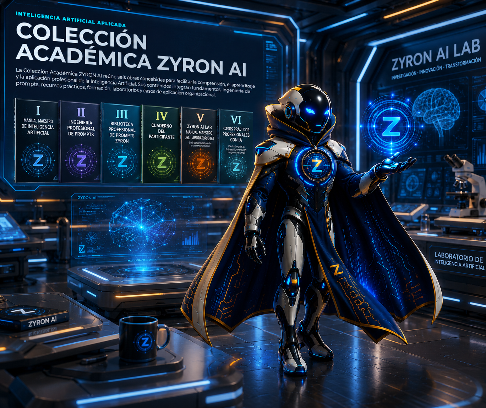

Democratizar
Facilitar el acceso comprensible al conocimiento sobre IA.
La Colección Académica ZYRON AI reúne seis obras concebidas para facilitar la comprensión, el aprendizaje y la aplicación profesional de la Inteligencia Artificial. Sus contenidos integran fundamentos, ingeniería de prompts, recursos prácticos, formación, laboratorios y casos de aplicación organizacional.

Facilitar el acceso comprensible al conocimiento sobre IA.
Relacionar fundamentos, herramientas y escenarios profesionales.
Apoyar formación, reutilización de recursos e innovación organizacional.
La estructura web está disponible. Los seis PDF permanecen pendientes de incorporación y no se ofrecen enlaces de descarga inexistentes.
recursos/coleccion-academica-zyron-ai/Actualmente la carpeta está preparada, pero no contiene los seis archivos definitivos. Cada tarjeta indica el nombre exacto pendiente.Obra introductoria y estructurada que presenta los fundamentos, conceptos, aplicaciones, oportunidades, riesgos y principios esenciales de la Inteligencia Artificial para usuarios académicos, profesionales y organizacionales.
Audiencia: Estudiantes, docentes, profesionales y organizaciones
Manual especializado para diseñar, estructurar, evaluar y perfeccionar instrucciones profesionales dirigidas a sistemas de Inteligencia Artificial, aplicables a entornos académicos, empresariales y técnicos.
Audiencia: Profesionales, docentes, investigadores y equipos técnicos
Colección organizada de prompts profesionales reutilizables para productividad, empresas, planificación, análisis, toma de decisiones, logística, Supply Chain y otras áreas de aplicación.
Audiencia: Profesionales, consultores, emprendedores y directivos
Material práctico de acompañamiento para cursos, diplomados, talleres y programas de formación en Inteligencia Artificial, con ejercicios, actividades, reflexiones y espacios de aplicación.
Audiencia: Participantes, estudiantes, docentes y facilitadores
Del aprendizaje a la innovación profesional
Manual institucional para comprender, diseñar y desarrollar un laboratorio de Inteligencia Artificial, incluyendo filosofía, gobernanza, infraestructura, ecosistemas tecnológicos, herramientas y métodos de aprendizaje aplicado.
Audiencia: Instituciones, docentes, investigadores, directivos y responsables de innovación
De la teoría a la transformación organizacional
Selección compacta de casos profesionales que muestran cómo analizar problemas, identificar oportunidades de automatización y aplicar Inteligencia Artificial en contextos empresariales y organizacionales.
Audiencia: Profesionales, consultores, directivos y organizaciones
Los documentos de esta colección tienen fines académicos, formativos y profesionales.